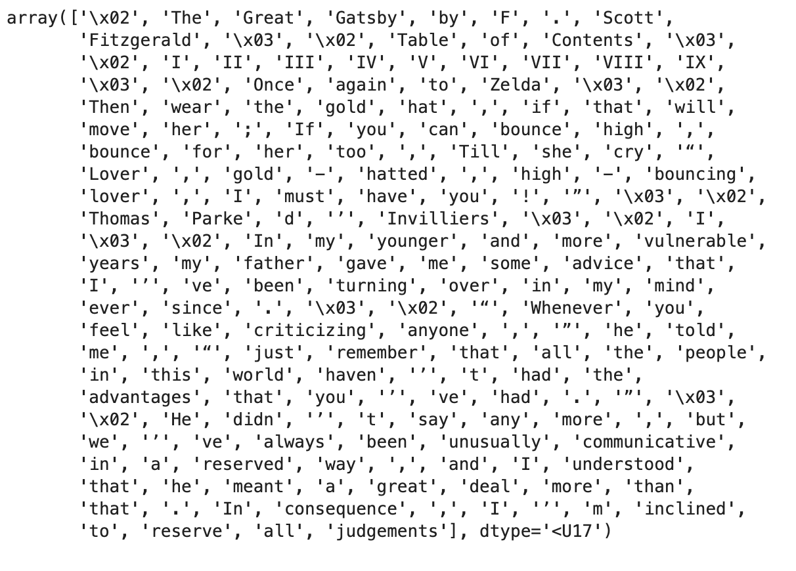

about üëã
Hi, I'm Gabriel. I'm a Data Science undergraduate at UC San Diego and incoming M.S. Data Science student at Columbia Engineering. I'm passionate about using data science to solve meaningful problems.
Currently, I'm researching at the DSTL Lab, developing ContentGen - a JupyterLab extension that uses AI to help instructors create more engaging lecture content.
Previously at Edison, I built a pipeline to automate third-party data requests. I've also spent 9 quarters as an Instructional Assistant for UCSD data science courses, teaching 1,200+ students and maintaining 100% student evaluations.
LinkedIn Resume gcha@ucsd.edu Site last updated: March 2025projects

CBM-GUI
Creating a user interface for the Concept Bottleneck Large Language Model (CB-LLM), an interpretable LLM introduced by Lily Weng at ICML 2024 MI Workshop. CB-LLM integrates high accuracy, transparency, and scalability for enhanced interpretability.
Speech Emotion Recognition
Recipient of the HDSI scholarship ($6500) for researching emotion classification in voice recordings. Experimented with and selected the best feature extraction methods, transforming recordings into matrices using Fourier analysis. Performed data augmentations and optimized four models: Decision Tree, SVM, ViT, and CNN.

N-Gram Language Model
Built a Language N-Gram model that estimates the probability of a word based on preceding words, using empirical frequencies. The goal is to uncover language patterns and enable statistical text generation.
CoDebug Python Package
Published a Python library to improve the debugging experience for developers in Jupyter Notebook by using linecache to read error messages and integrating with the OpenAI API to provide troubleshooting suggestions.
Predictive Outage Cause
Leveraged sklearn's decision tree to classify severe power grid outage causes, normalizing data and optimizing hyperparameters, achieving 82.7% accuracy.
ML Modeling in Spark
Wrangled 25 GB of data by performing joins and aggregations to train a Word2Vec model in Apache Spark, simultaneously learning the fundamentals of systems for scalable analytics.
IoT Stratified Sampling
Generated a stratified random sample, reducing 4,300 GB of IoT recording to approximately 34.3 GB while ensuring representativeness and efficient data selection.
Racoon Spottings
Integrated Google Maps API to display campus location and NoSQL Firebase Cloud to track racoon spottings on UC San Diego campus.
Since you made it this far ✌️ let's connect! My email is gcha@ucsd.edu